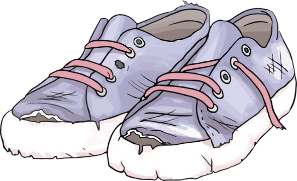

Rp 120.000
Hari ketiga sekolah, Aryo terpeleset saat hujan. Ia tidak cedera, tapi sepatunya sobek parah.
"Waduh, sepatuku rusak. Untung aku masih punya tabungan. Kayaknya memang harus beli yang baru."

Berkat tabungan yang ia jaga sejak lama, Aryo bisa membeli sepatu baru tanpa harus pinjam. Sekarang ia makin semangat menabung!
NEXT